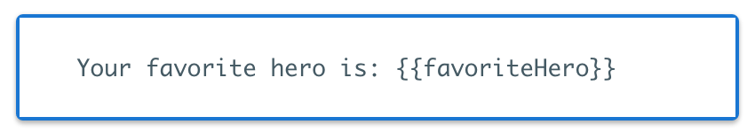
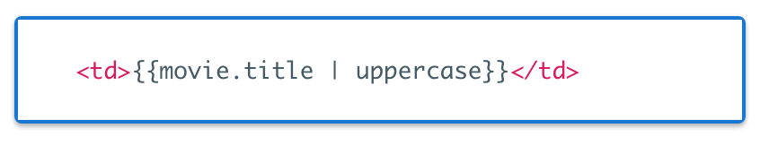
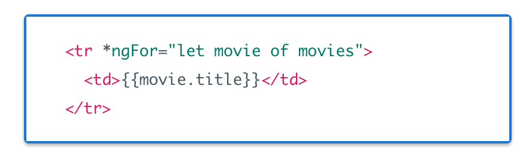
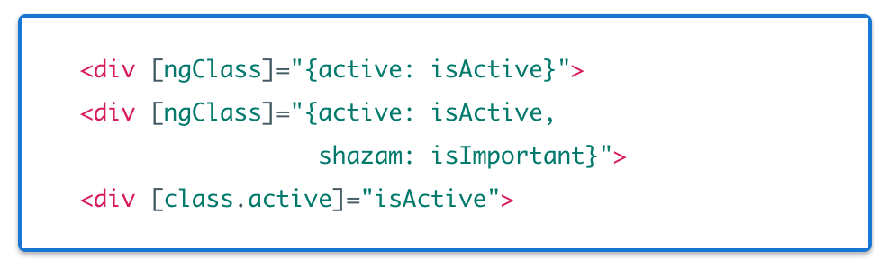
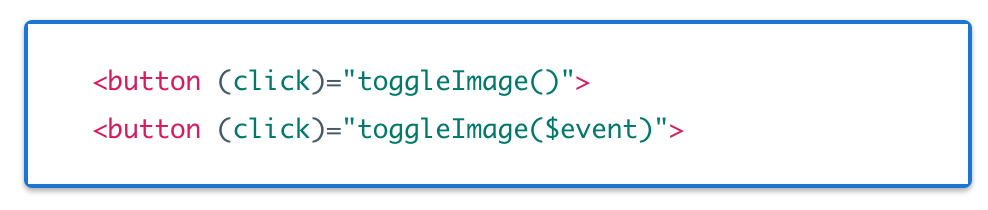
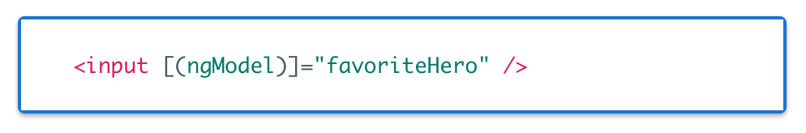

Component Based Webapps
React & Angular 2
What problem are we solving?
-
The mess of ng-controllers
- $scope inheritance
- semi-global data
- no 1-to-1 coupling between controller & view
- very little reusability
Read more: Lessons learned from PayPal Checkout
Solution, directives?
-
The mess of directives
- missing sane defaults
- ridiculous amount of odd syntax to remember
- angular component helps some...

Other issues we're solving?
- Better language support (ES6/7 & Typescript)
- Better performance
- Native app creation
- Official CLI tool to standardize app creation & lifecycle
- Easier ways to handle state management
The Component Approach

The Component Approach

React
- Maintainer: Facebook
- First Released: March 2013, ~3 years old
- Github Stars: ~50k
A View Library
- Just the "V" in "MVC"
- Uses a virtual dom
- Need to add other libraries for some basic functionality (ex: axios/fetch for http, react-router for routing)
JavaScript Centric
- No html files, all inside js (Uses JSX)
- Community favors ES6, facebook supports
See full project here
State
Lifecycle Methods
- componentDidMount
- componentWillReceiveProps
- componentWillUnmount
- ..and more
Advanced State Management


- Facebook recommends "Flux" architecture
- Most popular library (inspired by Flux): Redux
- Object Oriented alternative: Mobx
Testing
Facebook recommends Jest
- Uses Jasmine under the hood
- Works out of the box with React CLI
Tooling
- Create React App (Official CLI)
- Official React Chrome/Firefox dev tools
Pros (vs Angular 2)
- More stable, bigger community
- Lots of tutorials and resources online
- Lightweight, easier to see the big picture
- Fails at compile-time
- JavaScript centric (debatable as pro)
- Easier to test
Cons
- JavaScript fatigue!
- Need to decide on basic things like routing, http calls, etc..
- Lots of tutorials but some in es5, some es6, some a mix!
- Some parts may be harder to learn from OO background
- Requires you to really understand JavaScript
- how 'this' really works, .bind, .call, etc..
ng2 (Angular 2)
- Maintainer: Google
- First Released: September 2016, ~1 month old
- Github Stars: ~17k
A framework
As in Angular 1, it comes with a lot out of the box:
- Http service
- Routing service
- Forms
- TestBed to aid in testing
- etc..
Html Centric
- Still uses templates, with various rendering logic
- Uses its own custom html parser
- No virtual dom, but performance is on par with React
TypeScript
- Superset of ES6, maintained by Microsoft
- Allows for static typing
-
Syntax similiar to C#/Java
- interfaces
- private
- statics
- get / set
- Good IDE support, especially in VSCode & IntelliJ
Architectural overview

Angular 2 from 1
A brief comparison
See here for a full reference
Interpolation & Filters
Have pretty much stayed the same
 ng-repeat & local variables
ng-class [one-way attributes]
ng-click (events)
ng-model [(two-way binding)]
ng-controller - @Component
See full project here
Dependency Injection
RxJS
Angular 2's Http service uses this by default
- Allows you go subscribe to an http call
- Allows you to filter, compose, etc..
- Only get updated when what you filtered changes
Testing
- Test Utils provided by Angular 2
- Uses Jasmine under the hood
- Some tests may require a bit of setup
Tooling
-
Angular CLI (Official CLI)
- Based on highly successful Ember CLI tool
- Allows you to create components, services, etc.. from command line
- Still in beta...
- Augury ng2 chrome dev tool (Unofficial, work in progress)
Pros (vs React)
- Framework provides most of what you need
- More opinionated, standardizing is easier
- Closer to Java syntax, easier for non-JavaScript devs
- CLI tool standardizes creating new components, services..
- Can leverage some Angular 1 experiences
- RxJS works out of the box (must be added to React)
- Easier sell to department
Cons
- Just released, still going through bug fixes
- You need to learn TypeScript
- Unofficial tutorials may not work due to breaking changes
- Requires a lot of framework specific syntax to learn
- Testing is more difficult, especially mocking angular services
- CLI tool is still in beta
Recommended Tutorials
Official React Tutorial(< 1 hr)
Unofficial React.js Fundamentals(~6 hrs)
Official Angular 2 Quickstart(< 30min)
Official Angular 2 Tutorial(~4 hrs)